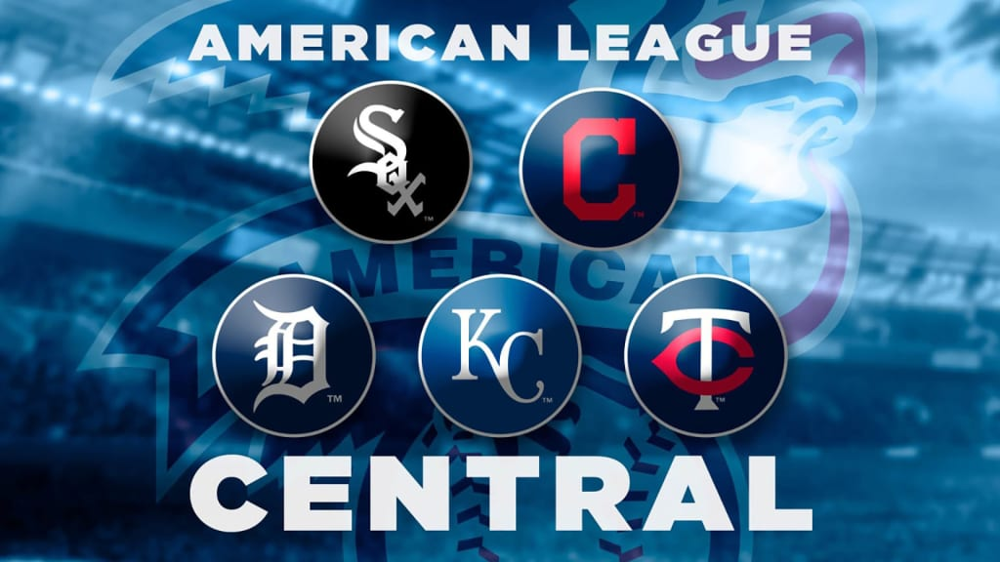

American League Central Teams
The American League Central Division, often abbreviated AL Central, consists of five teams located in the Midwestern United States. It was established in 1994 as part of a league-wide realignment. At its creation, it included the Chicago White Sox, Cleveland Indians, Kansas City Royals, Milwaukee Brewers, and Minnesota Twins. In 1998, the Milwaukee Brewers moved to the National League Central, and the Detroit Tigers joined the AL Central from the AL East. This lineup remains to this day, with the Cleveland team officially changing its name to the Cleveland Guardians at the end of the 2021 season. The AL Central is notable as one of two divisions (along with the NL East) where all member teams have won at least one World Series title.
Chicago White Sox
Founded as the Sioux City Cornhuskers in 1894, the franchise moved to St. Paul in 1895 before settling in Chicago in 1900 as the White Stockings. The name was shortened to White Sox in 1904. They play at Guaranteed Rate Field. Their primary team colors are black and white. A notable player is Tim Anderson.
Cleveland Guardians
The team began as the Cleveland Blues in 1901, later becoming the Naps and then the Indians, before adopting the Guardians name in 2022. They play at Progressive Field. Their primary team colors are red and navy blue. A key player is {Link: José Ramírez https://www.baseball-reference.com/players/r/ramirjo01.shtml}. The Guardians-Twins rivalry is a notable one within the division.
Detroit Tigers
Established in 1901 as a charter franchise of the American League, the Detroit Tigers have remained in Detroit since their inception. They play at Comerica Park. Their primary team colors are navy blue and orange. They have won four World Series titles, most recently in 1984. Notable players include Ty Cobb, Al Kaline, and Miguel Cabrera.
Kansas City Royals
The Kansas City Royals began as an expansion franchise in 1969 after the Kansas City Athletics relocated to Oakland. The team was named in homage to the American Royal livestock show. They play at Kauffman Stadium. Their primary team colors are royal blue, powder blue, gold, and white. The Royals have won two World Series championships, in 1985 and 2015. Notable players include {Link: George Brett https://www.britannica.com/topic/Kansas-City-Royals}, {Link: Salvador Perez https://www.yardbarker.com/mlb/articles/the_24_best_players_in_kansas_city_royals_history/s1__38909345}, and {Link: Bobby Witt Jr. https://www.baseball-reference.com/players/w/wittbo02.shtml}.
Minnesota Twins
The Minnesota Twins franchise originated as the Washington Senators in 1901 and moved to the Twin Cities of Minnesota in 1961, becoming the Twins. The team plays home games at Target Field. Their primary team colors are red, navy blue, and white. The Twins have won two World Series titles as the Twins (1987, 1991) and one as the Senators (1924). Notable players include {Link: Walter Johnson https://www.britannica.com/topic/Minnesota-Twins}, {Link: Harmon Killebrew https://sabr.org/bioproj/topic/minnesota-twins-team-ownership-history/}, {Link: Rod Carew https://www.britannica.com/topic/Minnesota-Twins}, and {Link: Kirby Puckett https://www.britannica.com/topic/Minnesota-Twins}.